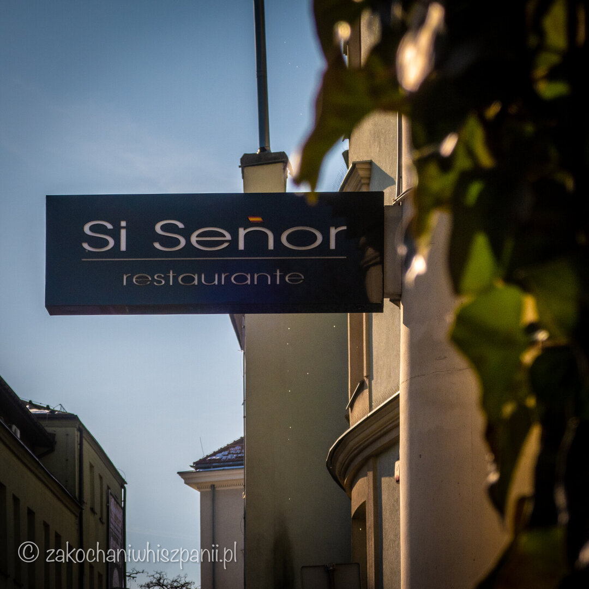
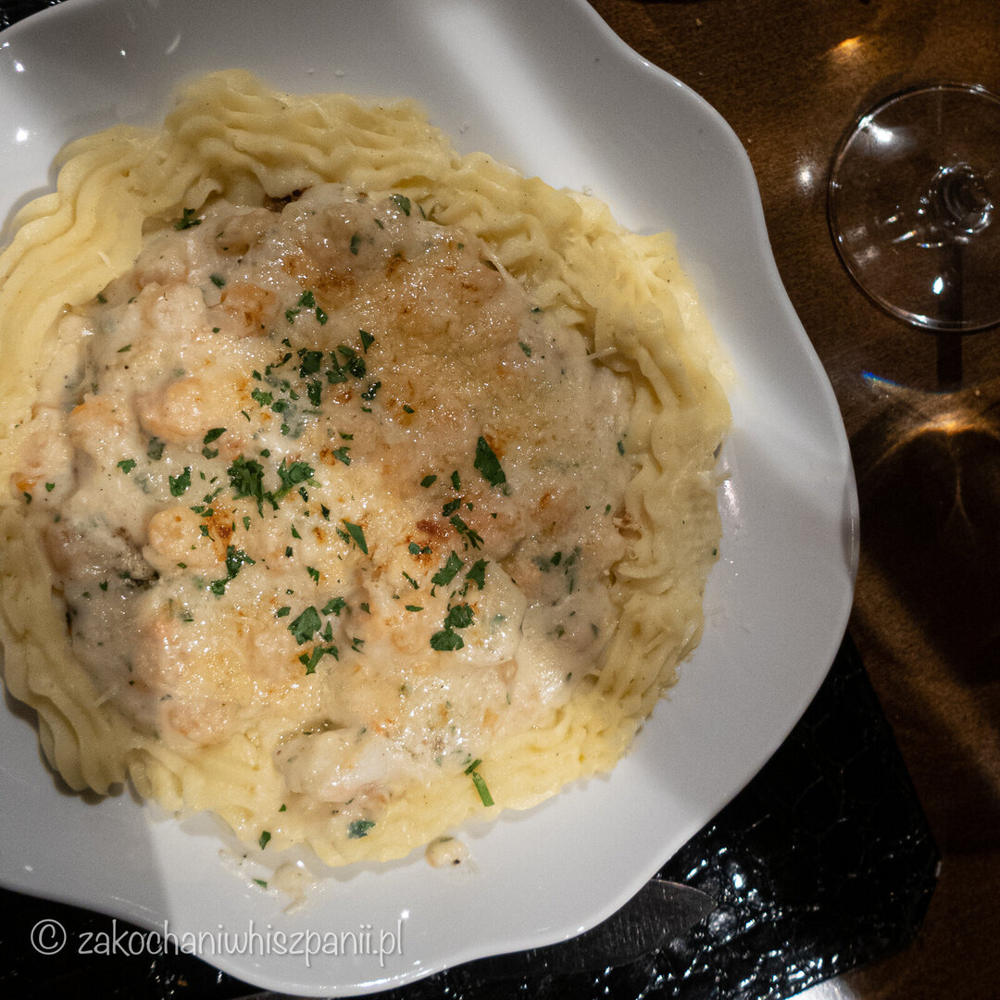
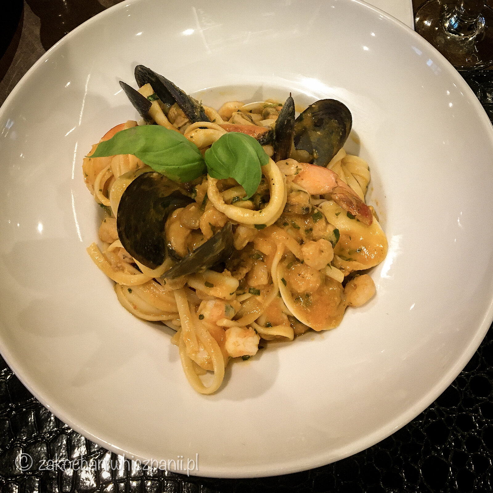
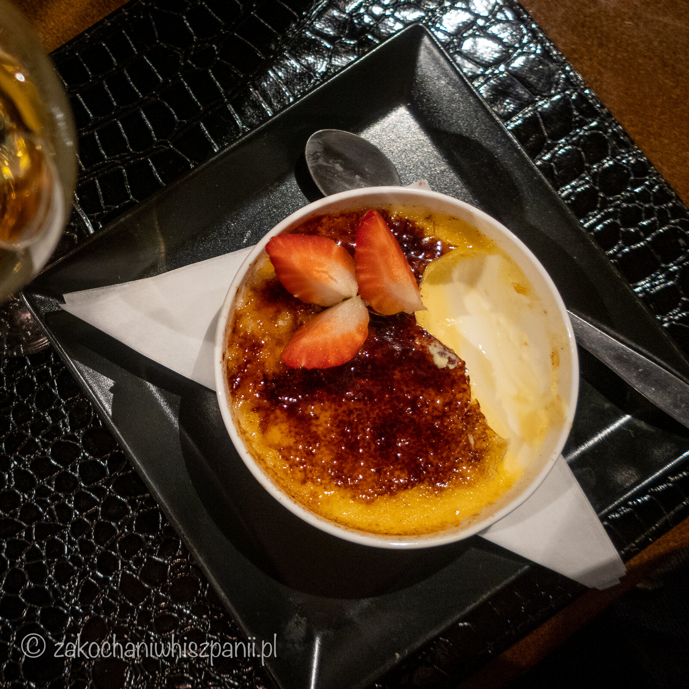

Si Señor, rozsmakuj się w Hiszpanii

Kielecka restauracja Si Señor to jedna z najlepszych hiszpańskich restauracji w Polsce. Słowa te pochodzą z książki Magda Gessler. Poziomki 2016/2017. Gdzie najlepiej zjeść i wyspać się w Polsce. Z tymi słowami zgadzamy się w stu procentach. Dlaczego? Dlatego, że już od progu czujemy się w tym miejscu wyjątkowo. Jest tam elegancko, ale swobodnie. Idealnie na romantyczną kolację oraz na spotkania rodzinne, czy biznesowe.
My mieliśmy okazję być w tym miejscu pierwszy raz z okazji dnia kobiet w marcu 2020. Mamy miłe wspomnienia, dzięki którym chętnie wracamy do Si Señor. Nawet teraz w czasie koronawirusa, gdy restauracje są zamknięte, z ogromną przyjemnością podróżujemy z Krakowa do Kielc po hiszpańskie dania na wynos.

Na stronie internetowej restauracji możemy przeczytać, że specjalnością kuchni są ryby, owoce morza i ostrygi, oraz ośmiornica. Na początek zamówiliśmy na przystawkę carpaccio z ośmiornicy. I to był strzał w dziesiątkę!!! Ośmiornica była idealnie miękka, podana z kawałkami papryki i oliwą. Po zjedzeniu przystawki wiedzieliśmy, że zapowiada się smaczna kolacja.

Na główne dania wybraliśmy z karty halibuta zapiekanego z krewetkami z sosem beszamelowym i purée, oraz makaron linguine z owocami morza. Smak i zapach naszych dań od razu przywołał miłe wspomnienia naszych podróży po Hiszpanii. Halibut zapiekany z krewetkami to dla nas nowe połączenie. Do tej pory nie mieliśmy okazji spróbować ryby zapiekanej z owocami morza. W tym daniu wszystko świetnie ze sobą współgrało. Potrawa była delikatna, smaczna i posiadała ciekawą formę podania.

Kolejnym daniem zamówionym przez nas był makaron. Ten podany na bogato :) Z ogromną ilością krewetek oraz małż. Wszystkie produkty użyte do dań były naprawdę pierwszej jakości.
Po krótkiej przerwie i po ostatnich łyczkach wina Albariño, zamówiliśmy na koniec desery w towarzystwie słodkiego Moscatela.
Pierwszym był hiszpański sernik (tarta de queso) o typowej dla Półwyspu Iberyjskiego kremowej konsystencji. Tego właśnie oczekiwaliśmy, zamawiając ten deser. Drugi to krem kataloński (crema catalana), pod idealnie chrupiącą warstwą palonego cukru skrywający aksamitne wnętrze, którego nie powstydziliby się w Barcelonie.

Podsumowując naszą ubiegłoroczną kolację w Si Señor, uważamy, że jest to miejsce, w którym czuć autentyczność potraw hiszpańskich. Produkty są starannie wyselekcjonowane. Karta win również oferuje nam wiele hiszpańskich alkoholi. Obsługa jest profesjonalna i pomocna. Wystrój jest nowoczesny, klimatyczny. Gorąco polecamy wizytę wszystkim, którzy lubią smaki kuchni hiszpańskiej, nawet teraz gdy restauracja serwuje dania tylko na wynos. Smaki i jakość potraw się nie zmieniły. Mała rada, po ponownym otwarciu restauracji, jeśli będziecie chcieli posmakować dań w Si Señor w weekend, lepiej zarezerwujcie wcześniej stolik. Dziękujemy Si Señor!!!
Si Señor
- Kielce, ul Kozia 3
- Telefon: 41 341 11 51